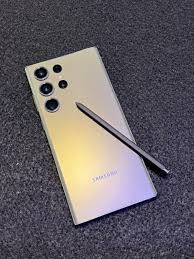
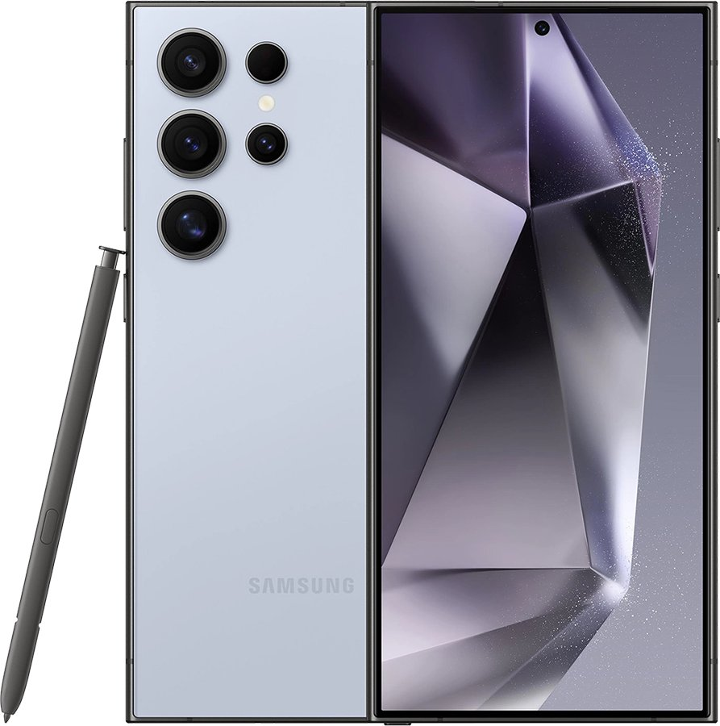

Samsung — Samsung Inc. firmasi tomonidan ishlab chiqarilgan toʻrtdiapazonli GSM-telefon, oʻz ichiga quyidagi funksiyalarni mujassamlashtiradi: iPod, kamerafon va internet-planshet. Mac OS X operatsion sistemasi platformasida ishlaydi.
S 22 Ultra haqida malumotlar

Samsung — Samsung Inc. firmasi tomonidan ishlab chiqarilgan toʻrtdiapazonli GSM-telefon, oʻz ichiga quyidagi funksiyalarni mujassamlashtiradi: iPod, kamerafon va internet-planshet. Mac OS X operatsion sistemasi platformasida ishlaydi.
S 23 Ultra haqida malumotlar

Samsung — Samsung Inc. firmasi tomonidan ishlab chiqarilgan toʻrtdiapazonli GSM-telefon, oʻz ichiga quyidagi funksiyalarni mujassamlashtiradi: iPod, kamerafon va internet-planshet. Mac OS X operatsion sistemasi platformasida ishlaydi.
S 24 Ultra haqida malumotlar
bosh sahifaga qaytish